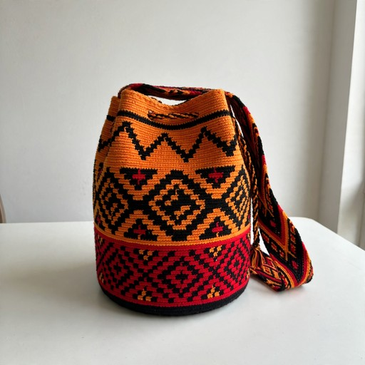
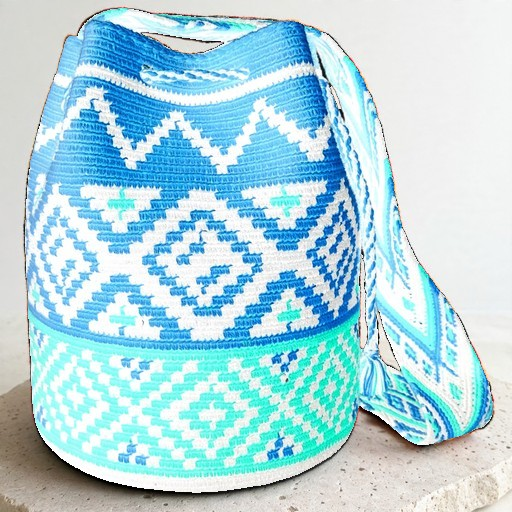

A small seller in Colombia starts with phone photos and a price list.
The seller pastes prices and FAQ and uploads phone photos.
Scenes and copy are generated, and each scene is checked against the real product.
A customer writes from the ad. The agent answers only from the catalog.
Objections are recorded per ad, and a weekly brief reads them.
Every generated scene is compared with the seller's photo. A changed product never becomes an ad.


Scores from the fidelity eval suite, cases g09 and a10: a synthetic test photo and an altered test scene. The tick on each bar is the limit.
Customer messages go through these steps, and the checks run outside the agent.
BAJA and BORRAR MIS DATOS are handled before anything else.
Anything off topic is declined, whatever the draft says.
Muse Spark answers from catalog facts and cites them.
Price, groundedness and confidence decide if it is sent.
A reply that breaks the price rule gets one guided retry. If it breaks it again, a safe reply goes out and the owner takes over.
The first check that fails decides. Each decision is logged with its reason, and no API call can override the hours.
Ley 2300 de 2023, America/Bogota time
BAJA opts out at once. BORRAR MIS DATOS erases the customer's data within 24 hours.
make evals replays recorded model outputs with no network. Anyone can run it.
These figures show the rules on recorded behavior at 07863d5. They do not measure how the live models behave today. Brand voice is not measured.